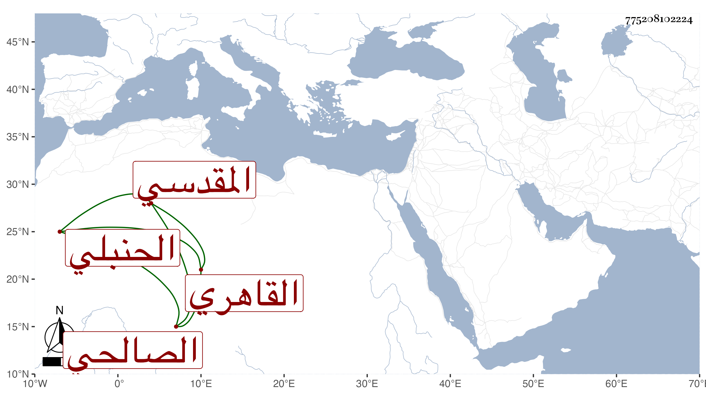

0902Sakhawi.DawLamic.ITO20230111-ara1.EIS1600.775208102224
Biography ID: 775208102224
614
محمد بن سالم بن سالم بن أحمد بن سالم الشمس المقدسي الأصل القاهري الصالحي الحنبلي الماضي أبوه ويعرف بابن سالم . ولد في رمضان سنة تسع عشرة وثمانمائة ومات أبوه وهو صغير فنشأ فحفظ القرآن وكان والده في مرضه استناب تلميذه العز الكناني في تدريس الجمالية والحسنية والحاكم وأم السلطان فلما مات استمر نائبا عن ولده إلى أن مات مع تعاطيه معلوم النيابة ولم يمكنه من مباشرتها لقصوره وعدم تأهله وإن ولاه قاضيا وبعده ساعده الشمس الأمشاطي حتى باشرها مع إمامة الصالحية وغيرها من الجهات وحج في سنة ثمان وثمانين وجاور التي بعدها ، وهو خير متقلل قانع عفيف سليم الصدر منجمع عن الناس متواضع له إلمام بالميقات وبشد المياكيب وعنده منها جملة .
